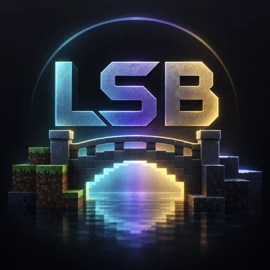

01
Semantics
Frame state, render stages, sampler bindings, attachments and ordering are treated as contracts — not visual guesses.

LSBLegacy Shader BridgeMinecraft 26.x · Fabric · Native Vulkan
Classic shader pipelines. Modern rendering. One bridge between them.
LSB reconstructs the rendering contracts legacy Iris / OptiFine-style shader packs expect and carries them onto Minecraft's native Vulkan-era rendering stack — without an OpenGL compatibility renderer.
01 / What the bridge actually does
LSB is not a shader pack and not an OpenGL wrapper. It rebuilds the semantics packs rely on — then feeds them into a renderer with explicit Vulkan-era ownership, state and ordering.
Frame state, render stages, sampler bindings, attachments and ordering are treated as contracts — not visual guesses.
Terrain and scene geometry are carried through explicit ownership and provenance instead of fabricated compatibility data.
The target is real native execution on the modern renderer, with unsupported paths staying fail-closed until proven.
02 / Architecture
The legacy path is only one side of the bridge. The long-term architecture keeps compatibility and a future native LSB shader API above the same Vulkan renderer foundation.
Existing shader packs enter through a compatibility frontend that reconstructs the behavior they expect.
A future LSB-native shader path can expose modern resources and scheduling without forcing everything through historical OpenGL-era assumptions.
Explicit targets, dependencies, ownership, synchronization, scene submission and native Vulkan execution live underneath both paths.
03 / Project state
Compatibility is intentionally incomplete. LSB opens stages only when their required data and producer state have been demonstrated in runtime testing.
Missing data stays missing. Neutral placeholders are not promoted as if a real stage produced them.
Renderer integrations remain adapters. Sodium can accelerate or provide lifecycle hooks without becoming LSB core.
A shader compiling is not enough. Runtime ownership, ordering and visible behavior still have to be proven.
04 / Beyond compatibility
Once the renderer fundamentals are stable across real packs, LSB can define a versioned native shader API with explicit render targets, compute workloads, storage resources, temporal lifetimes and modern dependency scheduling.
LEGACY SHADER BRIDGE
LSB is under active alpha development. Expect unfinished compatibility, aggressive correctness gates and frequent iteration.